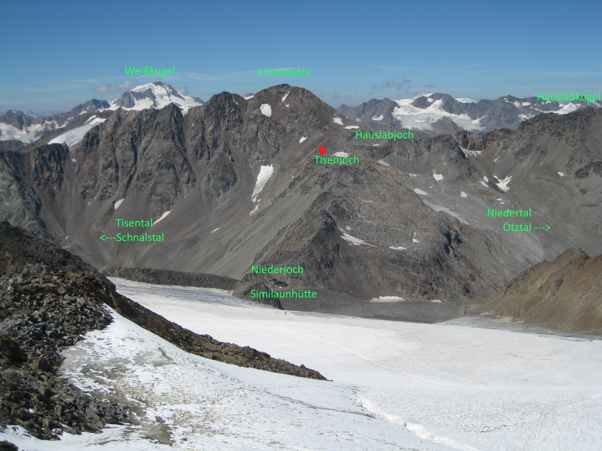
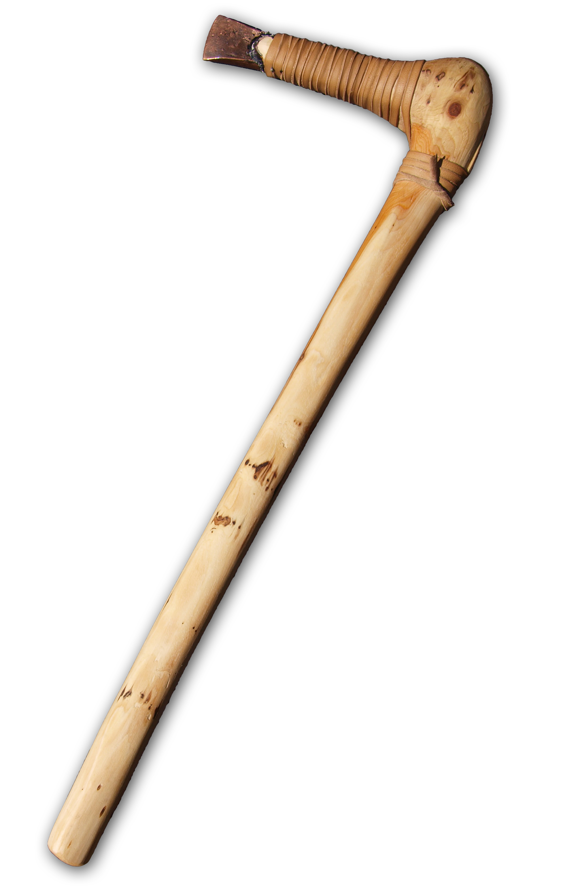

South Tyrol provincial MapView ↗
Zoom to the Val Senales and Tisenjoch area for official topography and present-day map layers.
Deep dives / Europe & Mediterranean
A Copper Age man died near an Alpine pass almost 5,300 years before two hikers saw his body emerge from melting ice in 1991. He left an axe, a bow, clothing, food residues and other traces rarely preserved together. Each tells part of his history. The landscape, museum and laboratory archives also show how interpretations of his last journey and death have changed.
A close look at the man known as Ötzi, the site near Tisenjoch, and the evidence collected from his body and belongings. Modern discovery and research dates appear alongside independently dated Copper Age evidence.


The Alpine divide, surrounding valleys and Bozen/Bolzano. Valley markers identify places discussed in research about the final ascent. Each is a broad landscape anchor.
3350–3120 cal BCE, discovery 1991
Find area at about 3,210 metres. A shallow hollow sheltered the body and associated objects, which had their own histories of movement and preservation. [1] [2] [3]
46.78°, 10.84°Copper Age find landscape
High ground nearby gave rise to one early name for the find. The marker locates the surrounding ridge and is separate from the discovery hollow. [1] [4]
46.79°, 10.85°1991 discovery context
The hikers reported the discovery at the Similaun refuge. It is a modern reference point and helped connect the find to responders on both sides of the border. [1]
46.77°, 10.85°Possible Copper Age ascent
Moss and pollen distributions support a southern approach through the valley. The location marks part of a proposed corridor and is approximate. [4] [5]
46.70°, 10.96°Proposed last-journey corridor
Plant research uses the distribution of mosses around the modern reservoir area to evaluate an ascent through Val Senales. [4]
46.74°, 10.85°From 1998, museum custody
The South Tyrol Museum of Archaeology houses Ötzi and conserves his belongings. This is the modern collection location. [6] [7]
46.50°, 11.35°Erika and Helmut Simon found the exposed body on 19 September 1991 while hiking in the Ötztal Alps. The find was initially treated as a comparatively recent death and Austrian responders helped recover it. A survey put the shallow hollow on the Italian side of a boundary close to the watershed. Further fieldwork recovered material from the ice and the hollow during successive visits. A bearskin cap recovered in the 1992 excavation is one reason to distinguish the first discovery from recovery of the assemblage. [1] [3]
Radiocarbon measurements on the remains place the man within 3350–3120 calibrated BCE. The range expresses the relationship between measured carbon and the calibration curve. It spans more than two centuries because a carbon measurement does not usually resolve an exact historical year. He lived in the Alpine Copper Age, when people worked copper and also depended heavily on stone, wood, hide and plant fibres. Estimates of about 45 years of age come from anatomical evidence and are a separate question from radiocarbon age. [8] [2] [9]
The body lay in a small depression near Tisenjoch at around 3,210 metres. Earlier descriptions emphasised protection from moving glacier ice. A later study re-examined the recovery records and nearby ice-core research and proposed that the location was repeatedly exposed or flooded during warm conditions. That model can account for some movement or altered positions of the artefacts after death. How often thaw exposed material and the precise initial positions of the body and objects remain open questions. [1] [3] [10]
A study recorded 75 kinds of moss and liverwort among materials from the find, many of which do not grow at the high-altitude hollow today. Researchers compared species from the soil, clothing and intestines with habitats elsewhere in the Alps. Together with pollen examined in different gut samples, the plants support a possible route northward through Val Senales, with changes of elevation in the earlier stages. Environmental distributions shifted after the Copper Age and people can carry plants indirectly. The evidence supports a corridor and an elevation sequence with room for more than one itinerary. [4] [5]
The stomach’s location was clarified in later imaging, making a new set of samples available separately from intestinal residues. Analysis of fats, proteins, DNA and microscopic remains linked the last meal to Alpine ibex, red deer and einkorn wheat. Researchers also found traces of bracken, whose role is unresolved. The meal contained a large proportion of fat, an energy-rich food in a high-altitude setting. A preserved meal is a short record of a person’s food rather than a full account of diet throughout life. [11] [7]
His surviving clothes include leggings, a coat, footwear, a cap and materials stitched from different hides. Mitochondrial DNA from sampled hides identified sheep and goat among components of the clothing, brown bear in the cap and roe deer in the quiver. A leather component of the footwear yielded cattle DNA. These objects show how domestic animals and hunted animals could contribute different materials to one traveller’s kit. Analyses identify particular samples and the clothing may have been repaired or remade over time. [12] [13]
A haft of yew held a copper blade. Residue and construction details show that Late Neolithic or Copper Age builders combined materials with different mechanical properties. Lead isotope ratios in the copper matched ore sources in southern Tuscany better than others tested in the study. The result establishes a material connection between places far apart. Whether an axe, a blade, copper stock or material transferred through several hands travelled that distance remains unresolved. [12] [14]
Ötzi had a small stone-tool kit that included a dagger and arrowheads. Wear and chipped edges let researchers ask how pieces were made, used and sharpened. The bow that survived was unfinished, and the quiver contained both finished arrows and incomplete shafts. Flint studies link raw materials to more than one Alpine source area. Some pieces were heavily used or recently resharpened, yet the kit does not tell us how he had acquired each piece or why some equipment was unfinished. [12] [15]
Imaging revealed a stone arrowhead in the left shoulder region. An earlier CT study traced damage to the subclavian artery and proposed fatal haemorrhage. A 2025 reconstruction identified a local haematoma and considered whether the wound caused immediate death. Serious bleeding remains plausible, including bleeding outside the body, and the study leaves the time between injury and death open. A wound on his hand and debated signs of head injury add context. They do not identify another person, a motive or a complete order of events. [6] [16] [20]
Multispectral imaging helped researchers map 61 tattoos, mainly lines and crosses. Some lie near joints affected by degenerative changes. A possible therapeutic purpose has been proposed, while the social meaning and technique of each mark cannot be read straight from its location. An ancient genome of Helicobacter pylori was also recovered from his stomach. It gives researchers evidence about the bacterium’s history and his exposure to it, with different evidence needed to establish which symptoms he experienced. [6] [17] [18]
The high-coverage genome published in 2023 reduced problems from contamination that affected earlier genetic work. Statistical models found an unusually high proportion of ancestry related to early Anatolian farmers among the European comparisons used, and no detectable steppe-related ancestry in that model. Variants also suggested relatively dark skin and a predisposition to male-pattern baldness. Phenotype probabilities and ancestry estimates refer to one individual and depend on the samples and models used. They cannot assign a modern national or ethnic identity to the man. [2]
The South Tyrol Museum of Archaeology maintains a cold chamber and monitors the body’s environment. Conservation takes continuing observation, because even well-preserved tissue and organic materials are vulnerable once recovered. Photography and three-dimensional records allow certain spatial questions to be examined without repeatedly moving the remains. The map separates the recovery area from the museum so an institutional address never stands in for an ancient location. [6] [7] [19]
| Question | Evidence | Scope of the finding | Sources |
|---|---|---|---|
| When did he live? | Radiocarbon dates on remains, calibrated to 3350–3120 BCE. | A date range for the man’s lifetime and death. | [8] [2] |
| Where was his body found? | Documented site near Tisenjoch at about 3,210 metres. | A recovery location. The exact place where he died remains uncertain. | [1] [3] |
| What had he eaten? | Stomach microscopy and molecular evidence, including ibex, deer and einkorn. | A window onto one meal. Bracken’s role is unresolved. | [11] |
| How did his copper arrive? | Lead isotope comparisons link axe copper to southern Tuscany. | The likely ore region. The archaeological pathway remains open. | [14] |
| Was the arrow wound fatal? | Imaging located the arrowhead, arterial damage and a haematoma. | A severe injury with uncertain timing, blood loss and interaction with other injuries. | [16] |
| Did the ice stay unchanged? | Neighbouring ice records and recovery documentation support multiple taphonomic models. | The preservation history could include episodes of exposure, melt and movement. | [3] [10] |
Open the source maps for their original detail, legends and dates. Their coverage and reproduction terms belong to the issuing institution.
Zoom to the Val Senales and Tisenjoch area for official topography and present-day map layers.
Open the maps of sample areas and moss distributions used to discuss the possible southern ascent.
See the discovery hollow and the technical reconstruction of movement and exposure around it.
Sources checked and linked above; geological and historical dating methods follow the primary papers.